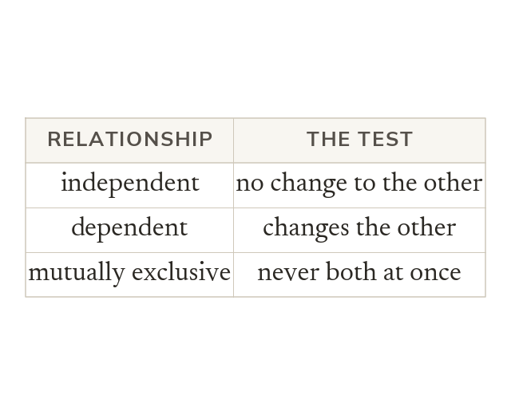

Three relationships
Independent: one event doesn't change the other's probability. Dependent: it does, as when items aren't replaced. Mutually exclusive: they can't both happen at once.
Two events are independent when one happening does not change the probability of the other. They are dependent when it does, as when an item is taken and not replaced. They are mutually exclusive when they cannot both happen at once.